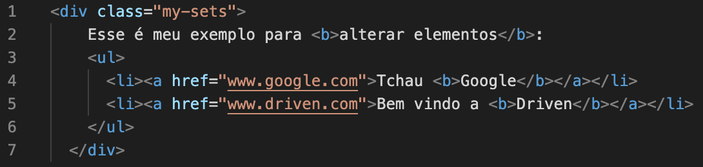

Document Object Model (DOM)
Indrodução
Guerra dos Navegadores - Netscape vs Internet Explorer
Final da década de 90
1995 - Netscape lança o JavaScript
Microsoft lança o JScript
DOM Legado
DOM Legado
Validação de form de usuários
Efeito Rollover
DOM Intermediário
1997 - Netscape e Microsoft adicionam suporte Dynamic HTML (DHTML)
É possível alterar o HTML sem precisar recarregá-lo
As modificacações seguiam incopatíveis entre os navegadores
JavaScript Window
Representa a janela do browser
Todos os objetos, funções e variáveis globais pertencem ao window
As variáveis globais são propriedades do window
As funções globais são métodos do window
JavaScript Document
Representa o site
O Document contém todos os elementos do HTML
Document está contido no Window
JavaScript Element
Tudo que está contido no document é um element
Herda todos os métodos comuns a todos os elements
Exemplos de elements
Header
H1
p
Button
Footer
ID
id é o atributo para utilizar um elemento único
Só pode haver um elemento com o respectivo id
Class
É o atributo usado para classicar um grupo de elementos a mesmas caracteríticas
Tem valor semântico
É utilizado para acessar um elemento via JS
getElement
É possível pegar os elementos chamando-os pelo id ou class
querySelector
Pega qualquer elemento que possua o nome especificado
Só retorna o primeiro elemento achado
querySelectorAll
Retorna TODOS os elementos que possuem o nome especificado
Modificações no HTML
É possível modificar os elementos do HTML
innerHTML
Retorna todo o texto do elemento, inclusive as tags do HTML
innerText
Retorna todo o texto do elemento, sem as tags
textContent
Retorna o texto do elemento e os filhos que estão somente em tags de formatação

<div id="mySets">
Esse é meu exemplo para <b>alterar elementos</b>:
<ul>
<li><a href="www.google.com">Tchau <b>Google</b> </a></li>
<li><a href="www.driven.com.br">Bem vindo a <b>Driven</b></a></li>
</ul>
</div>
Esse é meu exemplo para alterar elementos:Tchau GoogleBemvindo a Driven
Esse é meu exemplo para alterar elementos:
NodeList
É uma coleção de dados vindos, por exemplo, do querySelectorAll
Assim como arrays, possui length e index
Não possui os métodos push, pop, slice e join
É possível transformá-lo em um array com Array.from()
O NodeList do childList é dinâmico, ou seja as modificações nos elementos são automaticamente atualizadas no NodeList
createElement
Cria um elemento conforme especificado